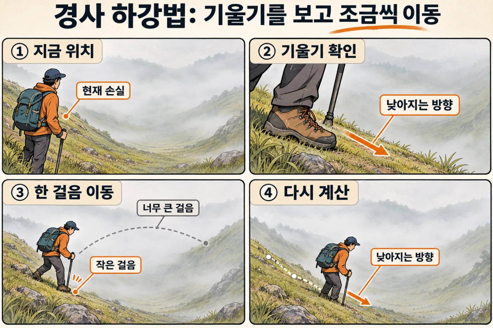
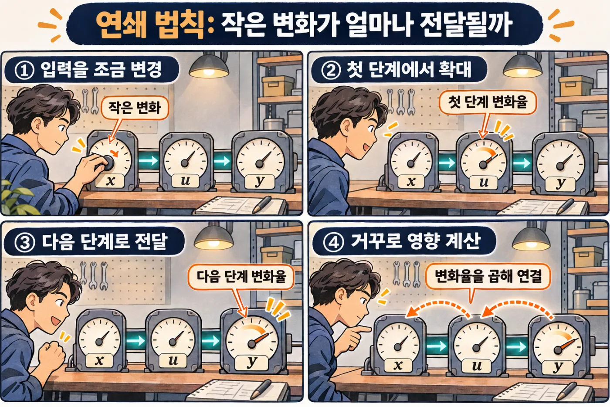

AI 계산을 따라가는 수학
벡터·확률·기울기를 작은 숫자로
"AI가 배운다"는 말은 신기하게 들립니다. 하지만 속을 들여다보면 곱하고, 더하고, 틀린 만큼 숫자를 조금 고치는 일을 되풀이할 뿐입니다. 국의 간을 맞추는 것과 같습니다. 한 숟갈 맛보고, 짜면 물을 넣고 싱거우면 소금을 넣습니다. 이 장에서는 그 계산을 작은 숫자 두세 개로 직접 따라가 봅니다.
- 사진이나 글이 AI 안에서 숫자 목록이 된다는 것을 설명할 수 있습니다.
- 두 숫자 목록이 얼마나 비슷한지 계산할 수 있습니다.
- AI가 틀린 정도를 숫자로 재고 그만큼 고쳐 가는 과정을 설명할 수 있습니다.
- AI가 문장에서 중요한 낱말에 집중하는 계산을 따라갈 수 있습니다.
26.1무엇이든 숫자 목록으로: 벡터와 모양#
컴퓨터는 "얼큰하다"는 말을 그대로 계산하지 못합니다. 먼저 숫자로 바꿔야 합니다. 김치찌개의 맛을 짠맛 3, 매운맛 4라고 적어 봅시다. 이렇게 대상을 나타내는 숫자 하나하나를 특징(feature)이라 하고, 특징을 정해진 순서로 늘어놓은 목록 (3, 4)를 벡터(vector)라고 합니다.
순서가 곧 뜻입니다. (3, 4)와 (4, 3)은 다른 국입니다. "첫 칸은 짠맛"이라는 약속이나 단위가 어긋나면 계산은 오류 없이 조용히 틀립니다.
숫자가 아닌 것은 어떻게 할까요? 국의 종류를 김치찌개 1, 육개장 2, 미역국 3이라고 번호로 적으면, 계산은 미역국을 "김치찌개의 3배"로 읽어 버립니다. 그래서 종류마다 칸을 하나씩 만들고 해당하는 칸만 1로 둡니다. 미역국은 (0, 0, 1)입니다. 이런 표현을 원-핫(one-hot)이라고 합니다.
숫자 하나는 스칼라(scalar), 벡터를 쌓은 표는 행렬(matrix), 표를 다시 쌓은 묶음은 텐서(tensor)입니다. AI 코드에서는 이 넷을 통틀어 텐서라고도 부릅니다.
[2, 3, 2]처럼 축마다 칸 수를 적은 것이 모양(shape)입니다. 숫자는 2 × 3 × 2 = 12개입니다. 글을 다루는 AI의 데이터도 같은 꼴입니다. 문장 2개, 문장마다 토큰(글 조각) 3개, 토큰마다 숫자 2개라면 모양은 [2, 3, 2]입니다. AI 코드에서 자주 만나는 오류가 "모양이 맞지 않는다"입니다. 텐서를 보면 각 축이 무엇을 뜻하는지부터 읽으세요.
한 걸음 더모양이 달라도 더해지는 이유: 브로드캐스팅
모양 [3, 2]인 국 표에 벡터 (1, 0)을 더하면 오류가 날 것 같지만, 대부분의 라이브러리는 벡터를 세 행에 똑같이 복사해 더합니다. 세 국의 짠맛이 모두 1씩 오릅니다. 이 자동 늘리기가 브로드캐스팅(broadcasting)입니다.
규칙은 "뒤쪽 축부터 견주어 칸 수가 같거나 한쪽이 1이면 된다"입니다. [3, 2]와 [2]는 맨 뒤가 2로 같아서 됩니다. [3, 2]와 [3]은 2와 3이 달라 안 됩니다. 뜻하지 않은 축으로 늘어나도 오류가 나지 않으니 결과의 모양을 꼭 확인하세요.
한 걸음 더크기가 제각각인 특징 맞추기: 표준화
나트륨은 900mg, 맵기는 2단계처럼 특징마다 숫자 크기가 크게 다르면, 큰 숫자가 계산을 혼자 좌우합니다. 그래서 특징마다 평균을 빼고 표준편차로 나누어 "평소보다 얼마나 벗어났나"로 바꿉니다. 이것이 표준화(standardization)입니다. 평균이 (10, 100), 표준편차가 (2, 20)이면 (12, 120)은 ((12 − 10) ÷ 2, (120 − 100) ÷ 20) = (1, 1)이 됩니다. 평균과 표준편차(13장)는 훈련에 쓴 데이터에서 한 번 구해 두고 새 입력에도 그대로 씁니다.
26.2두 벡터는 얼마나 닮았나: 내적과 코사인 유사도#
김치찌개를 좋아하는 손님에게 닮은 국을 추천하려 합니다. 닮은 정도를 어떻게 숫자로 만들까요?
기본은 내적(dot product)입니다. 같은 자리끼리 곱해서 모두 더합니다. 김치찌개 (3, 4)와 육개장 (6, 8)의 내적은 3×6 + 4×8 = 50입니다.
그런데 함정이 있습니다. 김치찌개와 자기 자신의 내적은 3×3 + 4×4 = 25입니다. 육개장(50)이 자기 자신(25)보다 더 닮았다는 이상한 결과입니다. 육개장은 맛의 비율이 같고 두 배로 진할 뿐인데, 내적은 진하기까지 점수에 넣기 때문입니다.
벡터를 화살표로 그리면 정리됩니다. 방향은 맛의 비율, 길이는 진하기입니다.
길이는 칸마다 제곱해 더한 뒤 제곱근을 씌워 구합니다. 김치찌개는 √(3² + 4²) = 5입니다. 내적을 두 길이로 나누어 진하기를 지운 값이 코사인 유사도(cosine similarity)입니다.
"a와 b의 내적을 두 벡터의 길이를 곱한 값으로 나눈다"고 읽습니다. 방향이 같으면 1, 직각이면 0, 정반대면 −1입니다. 육개장은 50 ÷ (5 × 10) = 1.0, 미역국은 15 ÷ (5 × 5) = 0.6입니다.
AI는 낱말이나 문서의 뜻을 수백에서 수천 칸짜리 벡터로 바꿔 놓고 이 계산을 합니다. 이 벡터가 임베딩(embedding)입니다. 뜻이 비슷한 글은 방향이 비슷해지도록 학습되어 있어서, "질문과 닮은 문서 찾기"가 곧 코사인 유사도 계산입니다.
코사인 0.6은 "60% 같다"는 뜻이 아닙니다. 같은 AI가 만든 벡터끼리 순위를 매기는 값입니다. 임베딩의 칸에는 '짠맛' 같은 이름표도 없습니다.
26.3레시피 한 줄의 계산: 가중합, 편향, 행렬 곱#
식당의 레시피 카드에 이렇게 적혀 있습니다. "소금은 어른 1명당 3꼬집, 아이 1명당 1꼬집, 인원과 상관없이 기본 1꼬집." 어른 2명과 아이 1명이 주문하면 소금은 3 × 2 + 1 × 1 + 1 = 8꼬집입니다. 신경망(neural network)의 가장 작은 부품인 뉴런(neuron)이 하는 계산이 바로 이것입니다. 신경망은 이런 뉴런을 수없이 이어 붙인 계산식입니다.
- 주문 (2, 1)은 입력입니다. 손님이 정합니다.
- 1명당 꼬집 수 (3, 1)은 가중치(weight)입니다. 입력을 얼마나 크게 반영할지 정합니다.
- 기본 1꼬집은 편향(bias)입니다. 입력이 0이어도 더해지는 출발점입니다.
입력과 가중치의 내적을 가중합이라고 합니다. 뉴런은 가중합에 편향을 더한 것입니다. 가중치와 편향을 합쳐 파라미터(parameter)라 하고, 계산식과 파라미터를 묶어 모델(model)이라고 부릅니다.
"파라미터 70억 개짜리 모델"은 레시피 카드에 숫자가 70억 개 적혀 있다는 말입니다. 학습은 이 숫자들을 고치는 일입니다.
실제로는 양념도 여러 가지, 주문도 여러 건입니다. 주문과 가중치를 각각 표로 만들면 모든 가중합을 한꺼번에 적을 수 있습니다. 이것이 행렬 곱입니다.
모양으로 보면 [주문 2, 사람 2] × [사람 2, 양념 2] → [주문 2, 양념 2]입니다. 맞닿은 안쪽 축의 칸 수가 같아야 곱할 수 있고, 바깥쪽 두 축이 결과의 모양이 됩니다. 여기에 편향을 더하면 신경망의 층(layer) 하나가 끝납니다.
행렬 곱은 같은 자리 숫자끼리 곱하는 것이 아닙니다. 위 두 표를 자리별로 곱하면 [[6, 2], [1, 0]]이라는 전혀 다른 값이 나옵니다. Python의 계산 도구인 NumPy와 PyTorch에서 *는 자리별 곱, @가 행렬 곱입니다.
이 단순한 곱셈과 덧셈이 수억 번 반복됩니다. 1장의 GPU가 AI에 꼭 필요한 까닭입니다.
26.4직선만 쌓으면 직선: ReLU가 필요한 이유#
층을 여러 개 쌓으면 더 똑똑해질 것 같습니다. 그런데 곱하고 더하기만 하는 층은 아무리 쌓아도 소용이 없습니다. 첫 층이 h = 2x + 1, 둘째 층이 y = 3h + 4라면, 합쳐서 y = 3(2x + 1) + 4 = 6x + 7입니다. 두 층이 한 층짜리 직선과 똑같아졌습니다. 백 층을 쌓아도 마찬가지입니다.
그래서 층 사이에 선을 꺾는 함수를 끼웁니다. 이를 활성화 함수(activation function)라 하고, 가장 흔한 것이 ReLU(렐루)입니다. 규칙은 한 줄입니다. 음수면 0, 양수면 그대로. 주방으로 치면 계산 결과가 "고춧가루 −1꼬집"일 때 0꼬집을 넣는 것입니다. 덜어낼 수는 없으니까요.
왼쪽 식 3 × ReLU(2x − 1)에 x = 0을 넣으면 2×0 − 1 = −1이 0으로 바뀌어 결과는 0입니다. x = 1이면 3 × 1 = 3, x = 2면 3 × 3 = 9입니다. ReLU가 없었다면 x = 0에서 −3이 나왔을 것입니다.
꺾인 선 하나는 "여기서부터 켜지는 스위치"입니다. 오른쪽처럼 스위치 두 개만 더해도 올라갔다 내려오는 모양이 생깁니다. 스위치가 수천 개면 구불구불한 관계도 얼마든지 흉내 낼 수 있습니다.
신경망은 (행렬 곱 + 편향) → 꺾기를 여러 번 되풀이한 것입니다. 꺾기가 빠지면 전체가 직선 하나로 줄어듭니다.
26.5점수를 확률로, 확률을 벌점으로: 소프트맥스와 손실#
다음에 올 낱말을 맞히는 모델을 언어 모델이라고 합니다. 언어 모델은 "오늘 점심은" 뒤에 올 낱말을 고를 때 후보마다 점수를 냅니다. 김치찌개 2점, 된장국 1점, 미역국 0점이라고 합시다. 로짓(logit)이라 부르는 이 점수는 음수도 되고 합도 제멋대로입니다. 이것을 "모두 0 이상이고 합이 1"인 확률로 바꾸는 함수가 소프트맥스(softmax)입니다.
z는 점수, p는 확률입니다. "i번째 후보의 확률은, e를 그 후보의 점수만큼 거듭제곱한 값을 모든 후보의 그런 값의 합으로 나눈 것"이라고 읽습니다. e는 약 2.718인 수입니다. e² ≈ 7.39, e¹ ≈ 2.72, e⁰ = 1이고 합은 11.11입니다.
거듭제곱을 거치면 음수 점수도 양수가 되고, 점수 차이가 클수록 확률 격차가 크게 벌어집니다.
틀린 정도를 숫자 하나로
모델을 고치려면 "얼마나 틀렸는지"를 숫자 하나로 알려 줘야 합니다. 이 숫자가 손실(loss)입니다. 국으로 치면 원하는 맛에서 벗어난 정도입니다.
고르기 문제에서는 정답에 준 확률만 봅니다.
"손실은 정답에 준 확률의 자연로그에 마이너스를 붙인 값"이라고 읽습니다. ln(자연로그)은 e의 거듭제곱을 거꾸로 돌리는 계산입니다. ln 7.39 ≈ 2입니다. 이 손실을 교차 엔트로피(cross-entropy)라고 합니다.
정답에 준 확률이 1이면 손실은 0입니다. 0.5면 0.69, 0.1이면 2.30, 0.01이면 4.61입니다. 자신 있게 틀릴수록 벌점이 가파르게 커집니다. 위 그림에서 정답이 된장국이었다면 손실은 −ln 0.245 ≈ 1.41입니다.
숫자를 맞히는 문제에서는 더 단순하게 (예측 − 정답)²을 손실로 씁니다. 다음 절에서 이것을 씁니다.
한 걸음 더문장의 확률: 조건부 확률과 로그
언어 모델은 낱말을 하나씩 이어 붙입니다. "비가" 다음에 "온다"가 올 확률처럼 앞에 온 것을 조건으로 한 확률을 조건부 확률이라 하고 P(온다 | 비가)라고 씁니다. 세로줄은 "~가 주어졌을 때"로 읽습니다.
첫 낱말이 "비가"일 확률이 0.4, 그 뒤에 "온다"가 올 확률이 0.75라면 "비가 온다"의 확률은 0.4 × 0.75 = 0.3입니다. 문장이 길면 1보다 작은 수를 수백 번 곱해 값이 0에 붙어 버립니다. 그래서 곱셈을 덧셈으로 바꿔 주는 로그를 씁니다. ln 0.4 + ln 0.75 = −0.916 − 0.288 = −1.204 = ln 0.3. 토큰마다 구한 −ln p의 평균이 언어 모델의 학습 손실입니다. 확률의 기초는 13장에 있습니다.
26.6맛보고 조금 고치기: 기울기와 경사 하강#
요리사는 레시피대로 끓이고(예측), 맛을 보고(손실), 짠지 싱거운지 가늠해(기울기), 레시피의 숫자를 조금 고칩니다(갱신). 한 번에 왕창 고치지 않고 조금씩 여러 번 합니다. 신경망의 학습도 이 네 박자의 반복입니다.
레시피를 "어른 1명당 w꼬집, 기본 1꼬집"으로 줄이겠습니다. 어른 2명이 주문했고 지금 w = 3이니 소금은 3 × 2 + 1 = 7꼬집이 들어갑니다. 맛을 보니 딱 좋은 양은 5꼬집이었습니다. 손실은 (7 − 5)² = 4입니다.
w를 어느 쪽으로 얼마나 고쳐야 할까요? 가장 솔직한 방법은 조금 바꿔 보는 것입니다. w를 3.01로 올리면 예측은 7.02, 손실은 2.02² = 4.0804입니다. w를 0.01 올렸더니 손실이 0.0804 올랐으니 비율은 약 8입니다. 이 "w를 조금 올릴 때 손실이 변하는 비율"이 기울기(gradient)입니다.
def loss(w):
return (w * 2 + 1 - 5) ** 2 # 예측 = w×2 + 1, 정답 = 5
eps = 0.0001
g = (loss(3 + eps) - loss(3 - eps)) / (2 * eps)
print(round(g, 4)) # 8.0- 1~2행: w를 받아 손실을 돌려줍니다.
- 4~5행: w를 아주 조금 올린 손실과 내린 손실의 차이를, 움직인 폭으로 나눕니다.
기울기의 부호가 방향을 알려 줍니다. +8은 "w를 올리면 손실이 커진다"는 뜻이니 w를 내려야 합니다. 이렇게 기울기의 반대쪽으로 조금 움직이는 방법이 경사 하강법(gradient descent)입니다.
"새 w는 지금 w에서 학습률 η(에타)와 기울기 g의 곱을 뺀 값"이라고 읽습니다. 학습률(learning rate)은 한 번에 얼마나 고칠지 정하는 보폭입니다. 간을 맞출 때 한 꼬집씩 넣느냐 한 국자씩 넣느냐에 해당합니다.

산의 높이가 손실, 서 있는 위치가 w입니다. 우리 예로 직접 걸어 봅시다.
- 보폭 0.1: w = 3 − 0.1 × 8 = 2.2. 예측 5.4, 손실 0.16으로 줄었습니다.
- 보폭 0.3: w = 3 − 0.3 × 8 = 0.6. 예측 2.2, 손실 7.84. 싱거운 쪽으로 넘어가 오히려 커졌습니다.
한 걸음 뒤에는 새 자리에서 기울기를 다시 구합니다. w = 2.2에서의 기울기는 8이 아니라 1.6입니다. 같은 보폭으로 한 번 더 가면 w = 2.04, 손실은 0.0064입니다. 골짜기에 가까울수록 기울기가 작아져 걸음도 저절로 줄어듭니다.
기울기는 방향을, 학습률은 보폭을 정합니다. 그리고 한 걸음 뗄 때마다 기울기를 새로 구합니다.
실제 손실 지형은 w가 수십억 개인 울퉁불퉁한 산입니다. 경사 하강은 근처의 낮은 곳으로 갈 뿐, 가장 낮은 곳에 닿는다고 보장하지 않습니다.
위 코드를 Python에서 실행해 8.0이 나오는지 확인하세요. 그다음 3을 2로 바꿔 보세요. 골짜기 바닥인 w = 2에서는 기울기가 0이 나옵니다.
26.7어느 숫자 탓인가: 연쇄 법칙과 역전파#
방금은 w를 직접 흔들어 기울기를 구했습니다. 파라미터가 70억 개면 70억 번 흔들어야 합니다. 더 빠른 길이 있습니다.
계산을 작은 단계로 쪼갭니다. w에 2를 곱하고, 1을 더하고, 5를 빼고, 제곱합니다. 값은 3 → 6 → 7 → 2 → 4로 흘러갑니다. 단계마다 "입력이 1 변하면 출력이 몇 변하는가"라는 배율이 있습니다. 2를 곱하는 단계는 2, 더하기와 빼기는 1입니다. 제곱 단계의 배율은 들어온 값의 2배인데, 들어온 값이 2이므로 4입니다.
여러 단계를 거친 영향은 배율을 모두 곱한 것입니다. 이것이 연쇄 법칙(chain rule)입니다. 2 × 1 × 1 × 4 = 8로, 흔들어 구한 기울기와 같습니다.

아래 줄처럼 손실에서 출발해 배율을 곱하며 거꾸로 돌아오는 방법이 역전파(backpropagation)입니다. 돌아오는 길에 들른 모든 값의 기울기가 한꺼번에 나옵니다. '예측' 아래의 4는 편향의 기울기이기도 합니다. 편향을 1 올리면 예측도 1 오르기 때문입니다. 파라미터가 몇 개든 앞으로 한 번, 거꾸로 한 번이면 전부의 기울기를 얻습니다.
국이 짤 때 마지막에 넣은 것부터 거슬러 올라가며 "무엇 탓인가"를 따지는 것과 같습니다. PyTorch에서는 loss.backward() 한 줄이 이 일을 합니다.
역전파는 기울기를 구하는 데까지입니다. 가중치를 고치는 일은 그다음의 경사 하강이 합니다.
26.8여러 손님, 처음 온 손님: 미니배치와 과적합#
손님 한 명의 평만 듣고 레시피를 고치면 그 사람 입맛에 휘둘립니다. 그래서 주문 몇 건을 묶어 기울기를 평균 낸 뒤 한 번 고칩니다. 이 묶음이 미니배치(mini-batch)입니다. w = 3에서 두 건을 봅시다.
- 손님 A: 어른 2명, 정답 5꼬집. 예측 7, 오차 +2, 기울기 +8. "줄여라"
- 손님 B: 어른 1명, 정답 6꼬집. 예측 4, 오차 −2, 기울기 1 × 1 × 1 × (−4) = −4. "늘려라"
평균은 (8 − 4) ÷ 2 = +2이고, 보폭 0.1이면 w = 3 − 0.2 = 2.8입니다. 전체 데이터를 다 보고 고치면 너무 느리고, 한 건씩 보고 고치면 너무 출렁입니다. 미니배치는 그 중간입니다.
외우기와 이해하기
손실이 줄어든다고 안심할 수는 없습니다. 단골 열 명의 평에 레시피를 끝없이 맞추면 그 열 명의 버릇까지 외워 버려, 처음 온 손님에게는 오히려 맛없는 국이 됩니다. 이것이 과적합(overfitting)입니다. 반대로 처음 보는 데이터에도 잘 맞는 성질을 일반화(generalization)라고 합니다.
그래서 데이터를 나눕니다. 학습에 쓰는 훈련 데이터와, 학습에는 쓰지 않고 채점만 하는 검증 데이터입니다.
"손실이 0.01까지 내려갔습니다"라는 보고를 받으면 어느 데이터의 손실인지 물으세요. 훈련 손실만 낮은 모델은 시험지를 외운 학생입니다.
26.9같은 재료로 만든 두 가지: 어텐션과 LoRA#
내적, 소프트맥스, 행렬 곱만 알면 요즘 AI의 핵심 부품 두 가지를 읽을 수 있습니다.
어텐션: 누구를 얼마나 참고할까
"찌개가 식어서 그것을 데웠다"에서 '그것'의 뜻을 알려면 '찌개'를 봐야 합니다. 이렇게 다른 낱말을 얼마나 참고할지 정해 섞는 계산이 어텐션(attention)입니다. 낱말마다 벡터 세 개를 씁니다.
- 쿼리(Query, Q): "나는 이런 것을 찾는다"는 질문
- 키(Key, K): "나는 이런 낱말이다"라는 이름표
- 값(Value, V): 참고될 때 건네줄 내용
점수가 앞 절과 같은 (2, 1, 0)이므로 비중도 (0.665, 0.245, 0.090)입니다. 값을 이 비중으로 섞으면 0.665 × (4, 0) + 0.245 × (0, 4) + 0.090 × (2, 2) = (2.84, 1.16)입니다. '그것'의 새 벡터에 '찌개'의 내용이 가장 많이 담겼습니다. 키는 점수를 내는 데만, 값은 섞는 데만 쓰입니다. 세 벡터는 낱말의 임베딩에 학습된 행렬을 곱해 만듭니다.
모든 낱말이 모든 낱말에게 이 계산을 하므로 낱말이 3개면 점수는 3 × 3 = 9칸, 6개면 36칸입니다. 글이 2배 길어지면 계산은 4배가 됩니다. 이 부품으로 대규모 언어 모델(LLM)을 짓는 이야기는 27장에서 이어집니다.
한 걸음 더점수를 √d로 나누는 이유
더 읽을거리에 있는 논문의 어텐션 식은 softmax(QKᵀ ÷ √d) × V입니다. ᵀ는 표의 행과 열을 맞바꾼다는 표시이고, d는 키 벡터의 칸 수입니다. 내적은 칸마다의 곱을 더한 것이라 칸이 많을수록 값이 커지기 쉽습니다. 점수가 10배인 (20, 10, 0)이 되면 소프트맥스 결과는 (0.99995, 0.00005, 0)으로 한 낱말만 보게 되고, 기울기도 거의 0이 되어 학습이 더뎌집니다. 그래서 칸 수의 제곱근으로 나누어 점수 크기를 되돌립니다. 칸이 100개면 10으로 나눕니다.
LoRA: 큰 표를 작은 두 표로
이미 학습된 큰 모델을 내 용도에 맞게 조금 더 학습시키는 일을 파인튜닝(fine-tuning)이라고 합니다. 가중치 표 하나가 1000 × 1000이면 고칠 숫자가 100만 개입니다.
그런데 "고칠 양"을 담은 표는 단순해도 충분한 경우가 많습니다. 아래 그림의 왼쪽 표는 16칸이지만 모든 행이 (2, 0, 1, 1)의 몇 배일 뿐입니다. 표 안에 들어 있는 서로 다른 방향의 수를 랭크(rank)라고 합니다. 랭크가 1이면 세로 한 줄과 가로 한 줄의 곱으로 표 전체를 만들 수 있습니다.
LoRA(로라, Low-Rank Adaptation)는 이 점을 이용합니다. 원래 가중치 W는 그대로 두고, 작은 두 표 U와 V만 학습해 W + U × V를 씁니다. 본점의 레시피 책은 건드리지 않고 지점용 보정 메모 한 장만 덧붙이는 셈입니다. 랭크 8이면 100만 개 대신 8 × (1000 + 1000) = 16,000개만 학습합니다. 원래 W도 메모리에 올려야 하므로, 줄어드는 것은 학습할 숫자이지 모델 크기가 아닙니다.
헷갈리기 쉬운 짝#
| 짝 | 차이 |
|---|---|
| 입력 / 가중치 | 손님이 정하는 주문 / 학습이 고치는 레시피 숫자 |
| 내적 / 코사인 유사도 | 길이까지 반영 / 길이를 지우고 방향만 비교 |
| 점수(로짓) / 확률 | 어떤 수든 가능 / 0 이상이고 합이 1 |
| 손실 / 기울기 | 얼마나 틀렸나 / 어느 쪽으로 고치면 줄어드나 |
| 역전파 / 경사 하강 | 기울기를 구한다 / 그 기울기로 고친다 |
| 훈련 손실 / 검증 손실 | 풀어 본 문제의 점수 / 처음 보는 문제의 점수 |
실전 사례#
문서 검색 코드의 "코사인 유사도가 큰 순"을 "거리가 가까운 순"으로 바꾸자 순위가 뒤집혔습니다. 질문 q = (1, 0), 문서 A = (10, 0), 문서 B = (0.8, 0.6)으로 줄여서 따라가 봅니다.
- 코사인을 계산합니다. A는 10 ÷ (1 × 10) = 1.0, B는 0.8 ÷ (1 × 1) = 0.8. 방향이 같은 A가 1등입니다.
- 거리를 계산합니다. 거리는 칸마다 차이를 제곱해 더한 뒤 제곱근을 씌운 값입니다. A는 9, B는 √(0.2² + 0.6²) ≈ 0.63. 이번에는 B가 1등입니다.
- 원인을 찾습니다. A는 방향은 같지만 길이가 10이라 멀리 있습니다. 거리는 길이의 영향을 받습니다.
- 길이를 1로 맞춥니다. A를 자기 길이로 나누면 (1, 0)이 되어 거리 0으로 다시 1등입니다.
- 확인합니다. 정답을 아는 질문 몇 개로 바꾸기 전후의 순위를 비교합니다.
계산이 틀린 것이 아니라 "닮음"의 정의가 바뀐 것입니다. 모든 벡터의 길이를 1로 맞추면 두 기준의 순위는 같아집니다.
한눈에 정리#
- 데이터는 벡터가 되고, 쌓이면 행렬과 텐서가 됩니다. 모양의 각 축이 무엇인지부터 읽습니다.
- 내적은 같은 자리끼리 곱해 더한 값, 코사인 유사도는 거기서 길이를 지운 값입니다.
- 뉴런은 가중합 + 편향, 층은 행렬 곱입니다. 사이를 ReLU로 꺾지 않으면 여러 층이 한 층과 같아집니다.
- 소프트맥스는 점수를 확률로, 손실은 틀린 정도를 숫자 하나로 바꿉니다.
- 학습은 맛보고 조금 고치기입니다. 기울기의 반대쪽으로 학습률만큼 움직이고, 기울기는 역전파로 한꺼번에 구합니다.
- 모델은 훈련 손실이 아니라 검증 손실로 고릅니다.
- 어텐션은 내적 → 소프트맥스 → 가중합이고, LoRA는 큰 표의 변화량을 작은 두 표의 곱으로 배웁니다.
확인 문제#
모양 [5, 3]인 X와 [3, 2]인 W를 행렬 곱하면 결과의 모양은 무엇일까요? W의 모양이 [2, 3]이었다면 어떻게 될까요?
정답 보기
[5, 2]입니다. 맞닿은 안쪽 축이 3으로 같고, 바깥쪽 5와 2가 결과의 모양이 됩니다. W가 [2, 3]이면 안쪽이 3과 2로 달라 곱할 수 없고 오류가 납니다.
임베딩 검색에서 질문과 상관없이 늘 같은 문서 몇 개가 상위에 오릅니다. 그 문서들의 벡터는 유난히 길이가 큽니다. 무엇을 의심해야 할까요?
정답 보기
순위를 내적으로 매기고 있을 가능성이 큽니다. 내적은 방향이 조금만 맞아도 길이가 크면 값이 커집니다. 벡터 길이를 1로 맞추거나 코사인 유사도로 바꾸고, 정답을 아는 질문으로 순위를 다시 확인합니다.
두 모델이 모두 정답을 1등으로 골랐습니다. 정답에 준 확률은 각각 0.6과 0.9입니다. 두 모델의 손실은 같을까요?
정답 보기
다릅니다. −ln 0.6 ≈ 0.51, −ln 0.9 ≈ 0.11입니다. 맞혔는지만 세는 정확도는 같지만, 손실은 얼마나 확신했는지까지 반영합니다.
학습을 시작하자 손실이 4 → 7.84 → 15.4로 걸음마다 커집니다. 기울기 계산은 검증을 마쳤습니다. 가장 먼저 무엇을 바꿔 볼까요?
정답 보기
학습률을 줄입니다. 방향은 맞는데 보폭이 커서 골짜기를 번번이 건너뛰는 모습입니다. 본문의 예에서 보폭 0.3이 바로 이렇게 움직이고, 0.1로 줄이면 4 → 0.16 → 0.0064로 내려갑니다.
훈련 손실은 0.02까지 내려갔는데 검증 손실은 며칠째 오르고 있습니다. 동료가 "훈련 손실이 아직 줄고 있으니 더 돌리자"고 합니다. 어떻게 답할까요?
정답 보기
더 돌려도 좋아지지 않습니다. 훈련 데이터를 외우는 과적합 구간입니다. 검증 손실이 가장 낮았던 시점의 모델을 고르고, 더 나아지려면 데이터를 늘리거나 모델을 단순하게 해야 합니다.
AI에게 맡길 때#
AI 코딩 도구에게 학습 코드를 맡길 때는 "돌아간다"가 아니라 작은 숫자에서 손계산과 맞는다를 완료 기준으로 삼으세요.
PyTorch로 후보 3개 중 하나를 고르는 작은 분류 모델의 학습 코드를 작성해 줘. (1) 텐서가 만들어지는 줄마다 모양과 각 축의 뜻을 주석으로 적어 줘. (2) 손실 함수가 로짓을 받는지 확률을 받는지 밝히고, 소프트맥스를 두 번 적용하지 않았는지 확인해 줘. (3) 로짓이 (2, 1, 0)이고 정답이 둘째 후보일 때 손실이 약 1.41인지 검사하는 테스트를 넣어 줘. (4) 데이터를 한 바퀴 돌 때마다 훈련 손실과 검증 손실을 나란히 출력해 줘.
받은 답에서 확인할 것: 훈련 데이터와 검증 데이터가 섞이지 않았는가, 테스트의 기대값이 내가 손으로 계산한 값과 같은가, 학습률을 바꿨을 때 손실이 어떻게 달라지는지 보여 주는가.
용어 정리#
- 벡터vector
- 정해진 순서로 늘어놓은 숫자 목록. 대상 하나를 나타낸다.
- 모양shape
- 텐서의 축마다 칸이 몇 개인지 적은 것. 예: [2, 3, 2].
- 내적dot product
- 두 벡터를 같은 자리끼리 곱해 모두 더한 값.
- 코사인 유사도cosine similarity
- 내적을 두 벡터의 길이로 나눈 값. 방향이 같으면 1.
- 임베딩embedding
- 글이나 그림의 뜻을 담도록 학습된 벡터.
- 가중치weight
- 입력을 얼마나 크게 반영할지 정하는 숫자. 학습으로 고친다.
- 편향bias
- 입력과 상관없이 더해지는 숫자.
- 파라미터parameter
- 가중치와 편향처럼 학습이 고치는 숫자 전체.
- ReLURectified Linear Unit
- 음수는 0으로, 양수는 그대로 내보내는 활성화 함수.
- 소프트맥스softmax
- 점수 여러 개를 합이 1인 확률로 바꾸는 함수.
- 손실loss
- 예측이 정답에서 벗어난 정도를 나타내는 숫자 하나.
- 교차 엔트로피cross-entropy
- 정답에 준 확률에 −ln을 씌운 손실.
- 기울기gradient
- 파라미터를 조금 올릴 때 손실이 변하는 비율.
- 학습률learning rate
- 한 번에 파라미터를 얼마나 고칠지 정하는 보폭.
- 역전파backpropagation
- 손실에서 거꾸로 돌아오며 모든 파라미터의 기울기를 구하는 방법.
- 과적합overfitting
- 훈련 데이터는 잘 맞히지만 처음 보는 데이터는 못 맞히는 상태.
더 읽을거리#
- Dive into Deep Learning — Linear Algebra — 벡터, 행렬, 내적, 행렬 곱을 코드와 함께 다시 확인할 수 있는 온라인 교재입니다.
- Google — 신경망의 활성화 함수 — ReLU가 직선을 어떻게 꺾는지 한국어로 설명합니다.
- Dive into Deep Learning — Softmax Regression — 로짓에서 확률, 교차 엔트로피로 이어지는 흐름을 다룹니다.
- Dive into Deep Learning — Forward and Backward Propagation — 계산 그래프를 앞으로, 거꾸로 따라가는 역전파 설명입니다.
- Vaswani 외 — Attention Is All You Need — 이 장의 어텐션 식이 나오는 논문입니다. 3.2절의 식을 이 장의 표와 견주어 보세요.